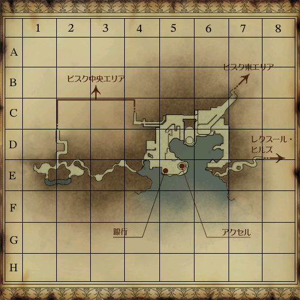

一覧釣りガイド：ビスク港(War_Age)（29000）
ビスク港(War_Age) の釣り場 4 か所（魚の出る位置 7）。
釣り場の地図

#1青い点が魚の出る位置、#番号が釣り場（3 匹以上）。点にマウスを合わせると魚の名前。
釣り場
地図の青い点が魚、赤がプレイヤーを襲うモンスターの出る位置。失敗マスはヒットゾーン 0・HP 満タンの魚のときのゲージに占める割合。
#1（魚 3 匹）
- 魚の数
- 3
- 広さ
- 0 m
- 再出現
- 60 秒〜1 時間 15 分
- 魚の Lv
- 5〜99
釣れる魚
| 魚（出るたびに抽選） | 数 | おもなドロップ（1 匹あたり） | 失敗マス（スキル 30 / 60 / 90） |
|---|---|---|---|
| イプス バス Lv 5〜8（20%）／イプス バス Lv 8〜10（30%）／イプス バス Lv 8〜10（30%）／イプス バス Lv 10〜12（20%） | 2 | イプス バス < 33cm > 0.3、イプス バス < 36cm > 0.3、イプス バス < 31cm > 0.2、イプス バス < 38cm > 0.2 | 8% / 0% / 0% |
| 宝箱 Lv 99（3%）／宝箱 Lv 81〜82（51%）／ガラクタ Lv 18〜20（21%）／ボロボロの宝箱 Lv 99（1%）／ボロボロの宝箱 Lv 81〜82（24%） | 1 | 魚拓紙 0.8、エメラルド 0.7、アクアマリン 0.7、ルビー 0.7 | 68% / 41% / 17% |
近くの敵
| モンスター | Lv | 行動 | 数 | 魚までの距離 |
|---|---|---|---|---|
| マブの使徒 | 120〜125 | アクティブ・リンク | 6 | 32 m |
小さな釣り場（魚 1〜2 匹）
| 釣り場 | 魚 | 釣れる魚 | 再出現 | 近くの敵 |
|---|---|---|---|---|
| #2 | 2 | イプス バス Lv 5〜8（20%）／イプス バス Lv 8〜10（30%）／イプス バス Lv 8〜10（30%）／イプス バス Lv 10〜12（20%） 宝箱 Lv 99（3%）／宝箱 Lv 81〜82（51%）／ガラクタ Lv 18〜20（21%）／ボロボロの宝箱 Lv 99（1%）／ボロボロの宝箱 Lv 81〜82（24%） | 60 秒〜2 時間 | なし |
| #3 | 1 | イプス バス Lv 5〜8（20%）／イプス バス Lv 8〜10（30%）／イプス バス Lv 8〜10（30%）／イプス バス Lv 10〜12（20%） | 60 秒 | なし |
| #4 | 1 | イプス バス Lv 5〜8（20%）／イプス バス Lv 8〜10（30%）／イプス バス Lv 8〜10（30%）／イプス バス Lv 10〜12（20%） | 60 秒 | マブの使徒（Lv 120〜125） |